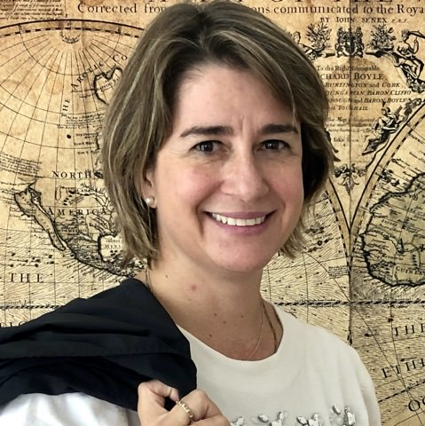
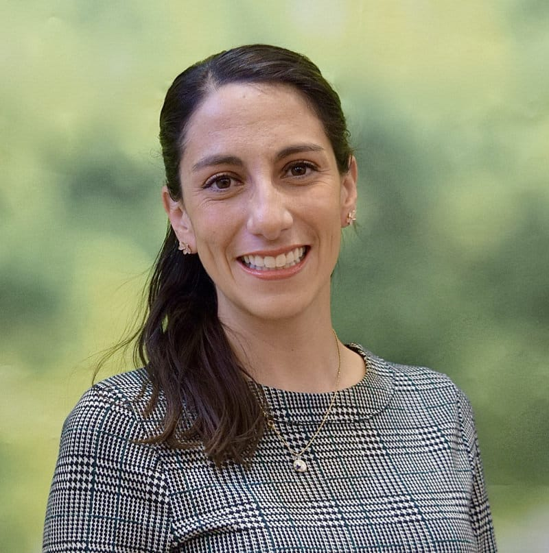

Conoce al equipo de Apolo21

Dra. Ma. Teresa Nicolás Gavilán
CDMX 6033
mnicolas@up.edu.mx
Mtra. Iara Alcauter Rueda
Rectoría Gral. 5502
ialcaute@up.edu.mx
Dra. Claudia Fabiola Ortega Barba
CDMX 5367
cortega@up.edu.mx

Mtra. María Fernanda Flores Munguía
AGS 7178
mfflores@up.edu.mx
Mtra. Montserrat Armesto Camargo
CDMX 5353
garmesto@up.edu.mx
 Mtra. Ana Fabiola Mora López
Mtra. Ana Fabiola Mora López
GDL 4345
afmora@up.edu.mx
Mtro. Luis Arturo Méndez Alba
AGS 7303
lamendez@ags.up.mx
Mtro. Arturo E. Becerra Mariscal
CDMX 6028
abecerra@up.edu.mx
Dra. Daniela Salgado Gutiérrez
GDL 7178
dsalgado@up.edu.mx
Mtra. Yosahandy Terán Tovar
Rectoría Gral. 5234
yteran@up.edu.mx
Mtro. Adolfo Juárez Briones
Rectoría Gral. 6543
ajuarez@up.edu.mx
Mtro. Lorenzo Elguea Fernández
CDMX 5500
lelguea@up.edu.mx
Sara Elvira Galbán Lozano
CDMX 5377
sgalban@up.edu.mx
Mariana De la Mora Figueroa
GDL -
mmoraf@up.edu.mx